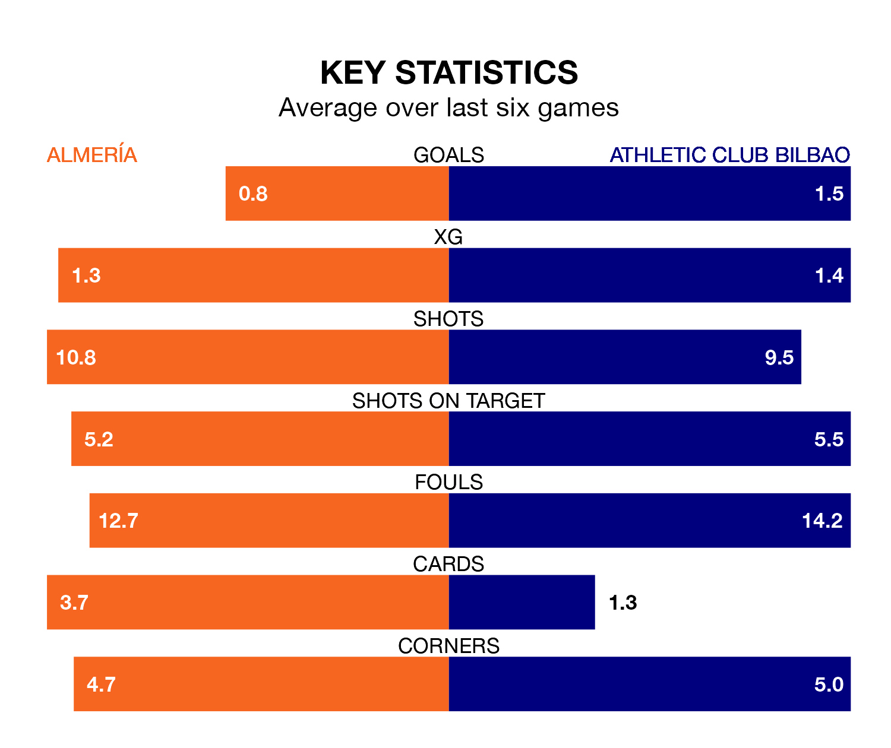

Athletic Club Bilbao are strong favourites to take all three points despite Almería's home advantage in Monday's late match at Power Horse Stadium Estadio de los Juegos Mediterráneos.
*Betting Company* are offering odds of 1.74 on Athletic sealing the win, with the visitors sitting fifth in La Liga table.
Almería, who are 20th in the league and 39 points behind Athletic, are priced at 4.06 to win. A draw is set at 3.57.
Almería are in terrible form in La Liga, with no wins and a draw from their last six games.
With four wins and a draw over that period, Athletic's form is much better – they have taken 13 points from 18, compared to the hosts' one.
In Unai Simón, the away side can rely on one of the league's safest pair of hands. He has kept 11 clean sheets in his 23 appearances this season, and no 'keeper has prevented the opposition scoring more often in La Liga.
In Almería's net, Luís Maximiano has three clean sheets in 20 games. He has conceded a goal every 49 minutes, twice as often as the 99 minutes between goals for Simón Mendibil.
With 42 goals in 23 games so far this season, Athletic are scoring more than average in the league with 1.8 goals per game. And they are conceding fewer than average, letting in 21 goals at a rate of 0.9 per game.
Almería, meanwhile, are below average scorers, with 1.0 goal per game, compared to a league average of 1.3. They have conceded 2.2 goals per game.
In the last 10 years, Almería and Athletic have played each other on six occasions. Athletic won five of them and they drew once.
On average, Almería scored 0.3 goals and Athletic 2.0 in those matches.
Their last meeting was on October 6, when Athletic won 3-0 at home.
Almería's last match was on February 3, a 2-1 loss against Valencia CF, with Sergio Arribas getting the goal for Almería.
Athletic beat RCD Mallorca 4-0 last time out, on February 2, with Yuri Berchiche (two), Gorka Guruzeta and Iker Muniain on the scoresheet.
Updated: 11:18 (UTC), 08/02/24